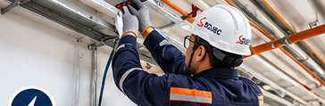
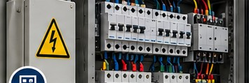
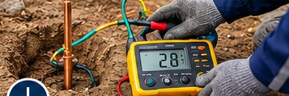
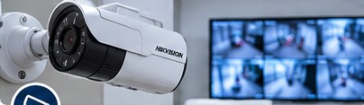
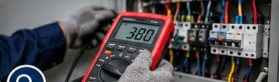

Instalaciones eléctricas
Instalaciones y adecuaciones eléctricas para viviendas, comercios y establecimientos industriales.
Ver servicio y solicitar evaluaciónServicios eléctricos, mantenimiento, seguridad electrónica y automatización para empresas, comercios y particulares en Lima Metropolitana y Callao.
Selecciona una especialidad para conocer su alcance y solicitar una evaluación técnica. Las fotografías son ilustrativas y no representan trabajos realizados por SOLIEC.

Instalaciones y adecuaciones eléctricas para viviendas, comercios y establecimientos industriales.
Ver servicio y solicitar evaluación
Montaje, adecuación, diagnóstico y mantenimiento de tableros eléctricos según requerimiento.
Ver servicio y solicitar evaluación
Instalación, mantenimiento y medición de sistemas de puesta a tierra.
Ver servicio y solicitar evaluaciónInspección, diagnóstico y mantenimiento eléctrico preventivo y correctivo de equipos e instalaciones.
Ver servicio y solicitar evaluación
Soluciones de cámaras IP, grabación, visualización remota, alarmas y control de acceso.
Ver servicio y solicitar evaluaciónAutomatización de iluminación, accesos y funciones de control para viviendas y negocios.
Ver servicio y solicitar evaluación
Evaluación de anomalías, disparos de protecciones y problemas eléctricos en instalaciones y equipos.
Ver servicio y solicitar evaluación